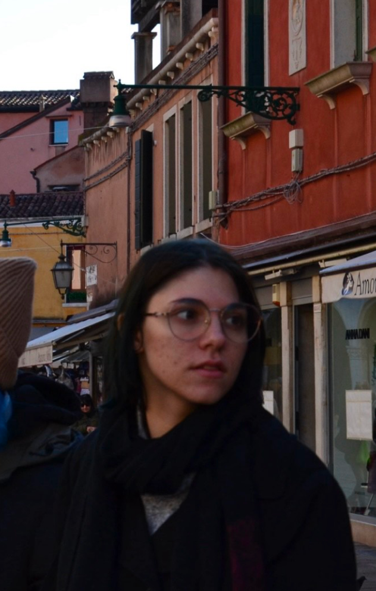

About me
As a graphic design student, I am currently pursuing my studies while actively developing my professional skills and working on real projects. I am 21 years old, and I am passionate about visual storytelling and bringing creative, unique ideas to life. My goal is to create designs that are not only eye-catching but also effectively convey messages and leave a lasting impression. If you’re curious about my work or would like to collaborate, feel free to explore my site and reach out!